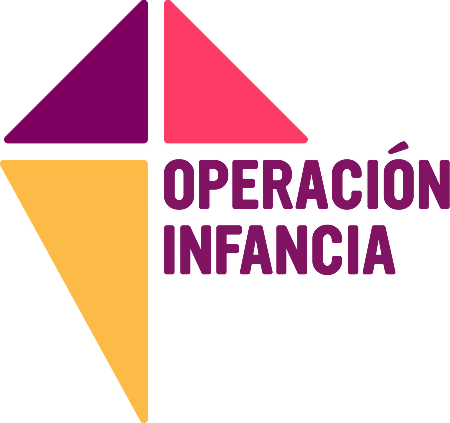

Responde dos preguntas y te mostramos las actividades del manual que calzan.
1¿Cuánto tiempo tienen?
2¿Qué quieren trabajar?
¿Ya sabes cuál buscas? Buscar por nombre
Recorrer un laberinto donde cada salida es una emoción que hay que nombrar.
Reconocer qué sentimos y qué hacer cuando la emoción se pone en rojo.
Escribir de forma anónima algo que nos preocupa y conversarlo en círculo.
Cada color es una emoción; los NNA crean su monstruo de cómo se sienten.